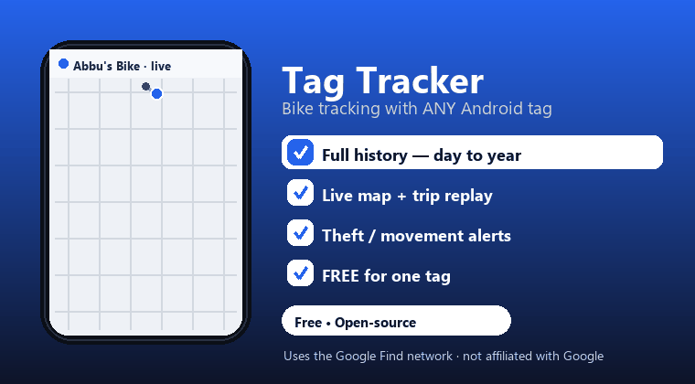

O Find Hub do Google mostra apenas a última localização. O Tag Tracker salva o histórico completo — todo o percurso, de um dia a um ano — além de mapa em tempo real, reprodução de trajetos e alertas antifurto.

Cada localização é salva — consulte hoje, os últimos 7 dias, um mês ou um ano inteiro e reproduza o trajeto.
Funciona com tags da rede Find do Google. Seu celular recebe as localizações pela internet — a tag pode estar em qualquer lugar.
Estacione e proteja: receba um alerta sonoro com um link do mapa assim que sua bicicleta se mover.
Seu histórico é sincronizado com seu próprio Drive, permitindo recuperá-lo automaticamente em um novo celular.
Sem servidores próprios. Seus dados ficam no seu celular e no seu Drive. Bloqueio por senha opcional.
Alterne entre mapas de ruas, satélite e híbridos.
Código aberto (GPL-3.0), baseado no GoogleFindMyTools. Sem vínculo com o Google. Utiliza um método não oficial que pode violar os Termos do Google — use por sua conta e risco, exclusivamente para rastrear seus próprios bens.